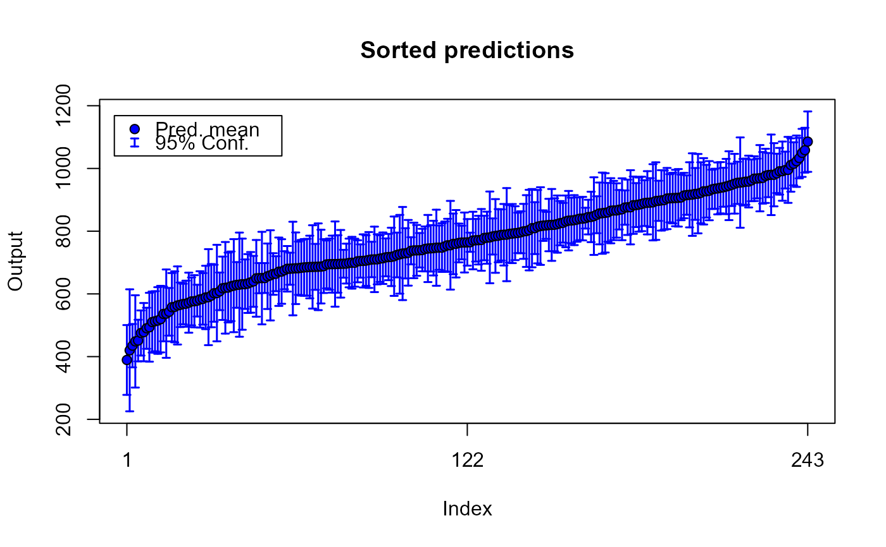
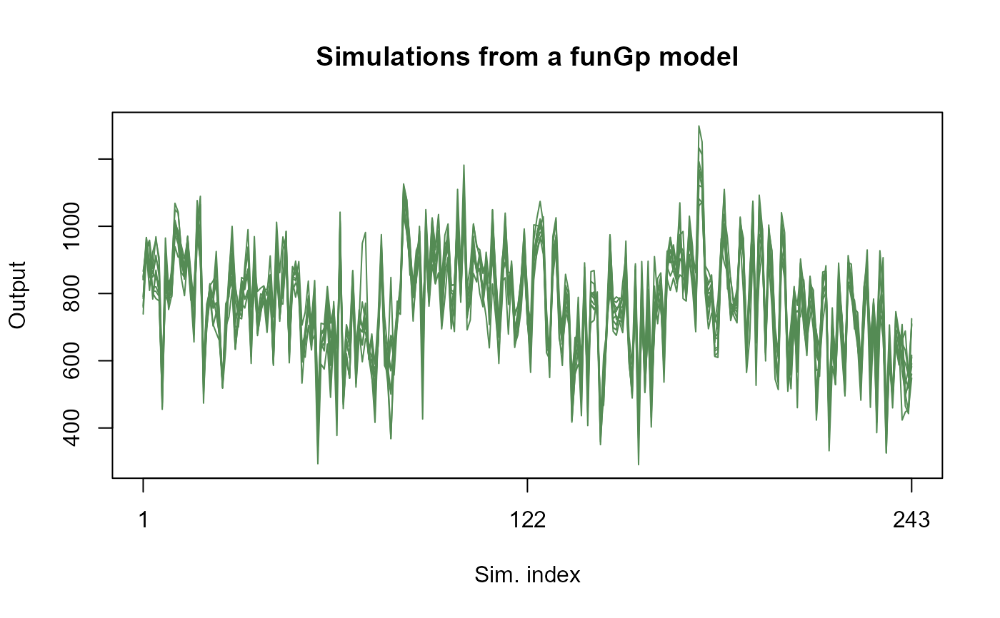

The fgpm_factory function returns an object of class "Xfgpm"
with the function call of all the evaluated models stored in the @log.success@args and
@log.crashes@args slots. The get_active_in function interprets the arguments linked to any
structural configuration and returns a list with two elements: (i) a matrix of scalar input
variables kept active; and (ii) a list of functional input variables kept active.
get_active_in(sIn = NULL, fIn = NULL, args)An optional matrix of scalar input coordinates with all the orignal scalar input variables.
An optional list of functional input coordinates with all the original functional input variables.
An object of class "modelCall", which specifies the model structure for
which the active inputs should be extracted.
An object of class "list", containing the following information extracted from the
args parameter: (i) a matrix of scalar input variables kept active; and (ii) a list
of functional input variables kept active.
Betancourt, J., Bachoc, F., Klein, T., Idier, D., Rohmer, J., and Deville, Y. (2024), "funGp: An R Package for Gaussian Process Regression with Scalar and Functional Inputs". Journal of Statistical Software, 109, 5, 1--51. (doi:10.18637/jss.v109.i05 )
Betancourt, J., Bachoc, F., and Klein, T. (2020), R Package Manual: "Gaussian Process Regression for Scalar and Functional Inputs with funGp - The in-depth tour". RISCOPE project. [HAL]
* which_on for details on how to obtain only the indices of the active inputs.
* modelCall for details on the args argument.
* fgpm_factory for funGp heuristic model selection.
* Xfgpm for details on object delivered by fgpm_factory.
# Use precalculated Xfgpm object named xm
# indices of active inputs in the best model
xm@log.success@args[[1]] # the full fgpm call
#> [1] fgpm(sIn = sIn[,2:5], fIn = fIn, sOut = sOut, f_disType = "L2_byindex", f_pdims = c(1, 3), f_basType = "B-splines", kerType = "gauss")
set.seed(100)
n.tr <- 32
sIn <- expand.grid(x1 = seq(0,1,length = n.tr^(1/5)), x2 = seq(0,1,length = n.tr^(1/5)),
x3 = seq(0,1,length = n.tr^(1/5)), x4 = seq(0,1,length = n.tr^(1/5)),
x5 = seq(0,1,length = n.tr^(1/5)))
fIn <- list(f1 = matrix(runif(n.tr*10), ncol = 10), f2 = matrix(runif(n.tr*22), ncol = 22))
which_on(sIn, fIn, xm@log.success@args[[1]]) # only the indices extracted by which_on
#> $s.inds
#> [1] 2 3 4 5
#>
#> $f.inds
#> [1] 1 2
#>
# data structures of active inputs
active <- get_active_in(sIn, fIn, xm@log.success@args[[1]])
active$sIn.on # scalar data structures
#> x2 x3 x4 x5
#> 1 0 0 0 0
#> 2 0 0 0 0
#> 3 1 0 0 0
#> 4 1 0 0 0
#> 5 0 1 0 0
#> 6 0 1 0 0
#> 7 1 1 0 0
#> 8 1 1 0 0
#> 9 0 0 1 0
#> 10 0 0 1 0
#> 11 1 0 1 0
#> 12 1 0 1 0
#> 13 0 1 1 0
#> 14 0 1 1 0
#> 15 1 1 1 0
#> 16 1 1 1 0
#> 17 0 0 0 1
#> 18 0 0 0 1
#> 19 1 0 0 1
#> 20 1 0 0 1
#> 21 0 1 0 1
#> 22 0 1 0 1
#> 23 1 1 0 1
#> 24 1 1 0 1
#> 25 0 0 1 1
#> 26 0 0 1 1
#> 27 1 0 1 1
#> 28 1 0 1 1
#> 29 0 1 1 1
#> 30 0 1 1 1
#> 31 1 1 1 1
#> 32 1 1 1 1
active$fIn.on # functional data structures
#> $f1
#> [,1] [,2] [,3] [,4] [,5] [,6]
#> [1,] 0.30776611 0.3486920 0.44514802 0.51745975 0.55165118 0.81509312
#> [2,] 0.25767250 0.9541577 0.35777378 0.12523909 0.10195396 0.56840006
#> [3,] 0.55232243 0.6952741 0.45573146 0.03014575 0.23791515 0.48006288
#> [4,] 0.05638315 0.8894535 0.44541398 0.77180549 0.86009766 0.16137012
#> [5,] 0.46854928 0.1804072 0.24509259 0.32741508 0.73826129 0.08925623
#> [6,] 0.48377074 0.6293909 0.69435071 0.38947869 0.49731226 0.16268237
#> [7,] 0.81240262 0.9895641 0.41223704 0.04105275 0.57992109 0.02672845
#> [8,] 0.37032054 0.1302889 0.32772587 0.36139663 0.01618339 0.70962948
#> [9,] 0.54655860 0.3306605 0.57256477 0.57097808 0.47212988 0.76101818
#> [10,] 0.17026205 0.8651205 0.96699908 0.68488024 0.04238973 0.85747478
#> [11,] 0.62499648 0.7775844 0.66177902 0.97111675 0.46315442 0.43726582
#> [12,] 0.88216552 0.8273034 0.62469772 0.70195881 0.62999477 0.41713645
#> [13,] 0.28035384 0.6033244 0.85665304 0.01154550 0.67324929 0.58564949
#> [14,] 0.39848790 0.4912318 0.77477889 0.53553213 0.08703467 0.82496758
#> [15,] 0.76255108 0.7803585 0.83402710 0.83657146 0.14358380 0.79313923
#> [16,] 0.66902171 0.8842270 0.09151028 0.80686674 0.90847850 0.32615257
#> [17,] 0.20461216 0.2077139 0.45952549 0.08093264 0.12253259 0.95793194
#> [18,] 0.35752485 0.3070859 0.59939816 0.23890930 0.72886279 0.65301961
#> [19,] 0.35947511 0.3305298 0.91972191 0.96598986 0.95037718 0.45867582
#> [20,] 0.69029053 0.1986791 0.98282408 0.03767233 0.04335591 0.60602188
#> [21,] 0.53581115 0.2356943 0.03780258 0.91640643 0.01959930 0.28872194
#> [22,] 0.71080385 0.2748867 0.57793740 0.72622658 0.19907246 0.71783084
#> [23,] 0.53834870 0.5913211 0.73331417 0.20077621 0.50508626 0.92339744
#> [24,] 0.74897223 0.2533907 0.24874240 0.84020075 0.92638876 0.67493949
#> [25,] 0.42010145 0.1234872 0.30073652 0.39666235 0.13840169 0.18593999
#> [26,] 0.17142021 0.2299059 0.73346670 0.39270226 0.16919458 0.34806716
#> [27,] 0.77030161 0.5975753 0.90695438 0.47255689 0.60662738 0.12351953
#> [28,] 0.88195359 0.2114086 0.20981677 0.58365691 0.81587669 0.10811622
#> [29,] 0.54909671 0.4637012 0.35813799 0.35238717 0.84338121 0.29795320
#> [30,] 0.27772376 0.6471012 0.44829914 0.02847401 0.78807719 0.83819990
#> [31,] 0.48830599 0.9605731 0.90642643 0.99508793 0.01902087 0.99277109
#> [32,] 0.92850507 0.6763982 0.38943930 0.95755846 0.69808750 0.43713441
#> [,7] [,8] [,9] [,10]
#> [1,] 0.20256457 0.26943131 0.31933115 0.16309071
#> [2,] 0.96387150 0.65883839 0.13250605 0.32475690
#> [3,] 0.66038711 0.07647121 0.61710912 0.13271604
#> [4,] 0.29811683 0.07128521 0.79130451 0.63729744
#> [5,] 0.11926219 0.37033152 0.33804871 0.33092961
#> [6,] 0.59975160 0.29710220 0.90544760 0.64907957
#> [7,] 0.12019055 0.55107827 0.19755671 0.30288836
#> [8,] 0.78843202 0.36989059 0.79408518 0.07123327
#> [9,] 0.36959607 0.84568953 0.75460289 0.66239047
#> [10,] 0.95632284 0.62079070 0.91139485 0.75960356
#> [11,] 0.91357666 0.39914002 0.32268770 0.55336017
#> [12,] 0.82333634 0.29966153 0.08616947 0.53927210
#> [13,] 0.31948216 0.38111984 0.91120045 0.84959232
#> [14,] 0.87770033 0.70113494 0.95517383 0.65322596
#> [15,] 0.80035100 0.94686529 0.67114294 0.95088576
#> [16,] 0.61135664 0.77282832 0.74498220 0.61722305
#> [17,] 0.07242114 0.21955016 0.44001698 0.49284063
#> [18,] 0.42158771 0.71611036 0.11503942 0.97600657
#> [19,] 0.34446560 0.66421796 0.67564278 0.49034522
#> [20,] 0.75173569 0.70625020 0.73155952 0.65517230
#> [21,] 0.21875132 0.27962799 0.48398490 0.59880179
#> [22,] 0.29213397 0.71225050 0.17104804 0.94756902
#> [23,] 0.35595337 0.66094211 0.67584853 0.36801151
#> [24,] 0.63196192 0.04101269 0.26298995 0.87818701
#> [25,] 0.89253107 0.06114149 0.34148083 0.45487507
#> [26,] 0.74403278 0.27976169 0.21024554 0.49646702
#> [27,] 0.45722242 0.30196772 0.01631959 0.46061562
#> [28,] 0.03609544 0.95661083 0.37676288 0.61790820
#> [29,] 0.56851452 0.38981872 0.56230740 0.60414349
#> [30,] 0.43901589 0.37178879 0.67998461 0.78587960
#> [31,] 0.60048445 0.84314249 0.74538877 0.55526847
#> [32,] 0.95138276 0.84723500 0.95007272 0.76897834
#>
#> $f2
#> [,1] [,2] [,3] [,4] [,5] [,6]
#> [1,] 0.40428567 0.63996650 0.8299317 0.00126048 0.65909994 0.238659285
#> [2,] 0.51071981 0.16497848 0.5279877 0.70752621 0.23927458 0.454284382
#> [3,] 0.52353644 0.35472278 0.3951302 0.63018760 0.26521079 0.995516626
#> [4,] 0.99279921 0.18642647 0.5739666 0.77307804 0.51826885 0.082745983
#> [5,] 0.42964742 0.89765616 0.9709721 0.89260688 0.73791087 0.051906005
#> [6,] 0.99601125 0.23778386 0.6501498 0.51120408 0.77961091 0.493797213
#> [7,] 0.78660025 0.98494348 0.3336012 0.74900107 0.11469440 0.053993596
#> [8,] 0.51591063 0.02133074 0.3314474 0.92637980 0.61237335 0.950448573
#> [9,] 0.50268797 0.10753897 0.9424349 0.09175352 0.91093618 0.633191261
#> [10,] 0.91163748 0.24482683 0.3811125 0.49665549 0.63402146 0.269937081
#> [11,] 0.26441590 0.72236241 0.5643239 0.19750126 0.27466403 0.996812936
#> [12,] 0.17385687 0.03273494 0.5115157 0.99413290 0.35283534 0.358804111
#> [13,] 0.40033126 0.54934999 0.1388606 0.03682104 0.67082936 0.371762078
#> [14,] 0.53835738 0.68280868 0.2397894 0.21756307 0.90671142 0.330226399
#> [15,] 0.24496437 0.30024090 0.7180091 0.89093614 0.73023583 0.104395513
#> [16,] 0.37585096 0.38877446 0.2972238 0.11893646 0.91976699 0.579901429
#> [17,] 0.58025355 0.73244615 0.5112374 0.36903899 0.38243326 0.333089466
#> [18,] 0.20895531 0.96249642 0.2777107 0.16237643 0.85414054 0.003777579
#> [19,] 0.80133001 0.76059617 0.3606569 0.16669152 0.05473409 0.994596109
#> [20,] 0.63880242 0.58167316 0.4375279 0.97250471 0.25398603 0.369234861
#> [21,] 0.73633076 0.46287299 0.8030667 0.81039974 0.36712900 0.220232561
#> [22,] 0.43881241 0.35630962 0.5206097 0.95332763 0.36057041 0.743159502
#> [23,] 0.57981238 0.38392182 0.6961521 0.39991053 0.28051653 0.305957312
#> [24,] 0.25604401 0.20578103 0.8478369 0.85224732 0.38869251 0.402208849
#> [25,] 0.46371823 0.13878037 0.8457093 0.06452286 0.34813444 0.393571443
#> [26,] 0.16861486 0.38908214 0.3918757 0.30252877 0.27892307 0.440756454
#> [27,] 0.61389453 0.26604622 0.1535138 0.49047287 0.80108813 0.772805076
#> [28,] 0.95810262 0.70329628 0.6394258 0.64626124 0.99501384 0.209569043
#> [29,] 0.47819473 0.40787817 0.2871710 0.51063433 0.75324196 0.748122688
#> [30,] 0.75115933 0.26556419 0.9283379 0.79725923 0.60334293 0.585355153
#> [31,] 0.02058322 0.40097786 0.1556361 0.56500895 0.59394818 0.324447196
#> [32,] 0.17096903 0.19731313 0.9638417 0.35352399 0.58229029 0.375047450
#> [,7] [,8] [,9] [,10] [,11] [,12]
#> [1,] 0.0269371939 0.856937166 0.74070557 0.64902246 0.11080007 0.377473720
#> [2,] 0.4833348761 0.846829579 0.10719257 0.14919437 0.88867790 0.465790255
#> [3,] 0.9700804388 0.326521052 0.64218078 0.84894045 0.81358746 0.244270759
#> [4,] 0.0003950703 0.547001304 0.42218400 0.29350508 0.19678676 0.118219357
#> [5,] 0.1057025485 0.734375969 0.80050923 0.55214200 0.60022242 0.008282355
#> [6,] 0.4399432044 0.805295539 0.61678825 0.87313486 0.03995796 0.650868898
#> [7,] 0.3122987410 0.206440008 0.24936833 0.64698444 0.47376198 0.056565584
#> [8,] 0.9713328420 0.880161665 0.68122334 0.39718339 0.77696495 0.130109230
#> [9,] 0.5852688691 0.396076361 0.34773863 0.02953345 0.57983291 0.960689858
#> [10,] 0.7339286285 0.983006980 0.89146371 0.35685917 0.32199174 0.259571558
#> [11,] 0.6635271511 0.561421920 0.65723943 0.69854467 0.99338840 0.009066601
#> [12,] 0.7229845193 0.908614467 0.93866547 0.29944833 0.49626937 0.992870629
#> [13,] 0.1110149436 0.715133768 0.13417751 0.80487199 0.68144838 0.652903802
#> [14,] 0.2185792171 0.235636412 0.97246007 0.77427911 0.73792263 0.724484820
#> [15,] 0.6225663018 0.003905179 0.35074852 0.21113518 0.90761295 0.714281988
#> [16,] 0.9592804280 0.479380508 0.23700023 0.37716342 0.44147918 0.825024178
#> [17,] 0.8123157280 0.872133126 0.61562878 0.31137363 0.74812418 0.148244921
#> [18,] 0.0221628349 0.262327267 0.74713370 0.89757377 0.75451789 0.675003473
#> [19,] 0.6825390456 0.663404556 0.96351838 0.41646146 0.44535953 0.846872858
#> [20,] 0.8307875313 0.879644723 0.93268467 0.83588398 0.36637605 0.992584993
#> [21,] 0.8078064425 0.911505256 0.79218674 0.32143973 0.07909700 0.304093186
#> [22,] 0.8418451962 0.390318467 0.31173462 0.13739671 0.20519513 0.145394889
#> [23,] 0.1876676735 0.865150691 0.09341344 0.61771291 0.88500082 0.519036944
#> [24,] 0.0949448342 0.514618581 0.20729386 0.67541651 0.91692171 0.832152318
#> [25,] 0.4488151143 0.741198946 0.03176634 0.27243210 0.61756435 0.918171508
#> [26,] 0.6004804880 0.960206614 0.57970549 0.18620697 0.36604104 0.348103863
#> [27,] 0.8635722811 0.569709971 0.15420484 0.33032637 0.67588659 0.332689337
#> [28,] 0.8514558950 0.311099508 0.12527050 0.12182000 0.41041966 0.838867004
#> [29,] 0.6977811693 0.743301628 0.14798581 0.23553055 0.66933529 0.446239590
#> [30,] 0.6439721654 0.450472970 0.91334263 0.93284663 0.91014941 0.694593564
#> [31,] 0.6546971288 0.473891811 0.25743041 0.78254141 0.41487542 0.902810826
#> [32,] 0.8803548680 0.474416566 0.54246530 0.45176515 0.15295163 0.029474204
#> [,13] [,14] [,15] [,16] [,17] [,18]
#> [1,] 0.471807718 0.308346305 0.11604077 0.09942609 0.62818284 0.841885150
#> [2,] 0.408890214 0.897289331 0.59845486 0.22993408 0.71348700 0.268108221
#> [3,] 0.336940273 0.916157075 0.84607314 0.44362621 0.02206025 0.260739697
#> [4,] 0.663275549 0.971690540 0.35086402 0.51570490 0.49690658 0.913385180
#> [5,] 0.873135848 0.342376201 0.31616703 0.92489425 0.44050280 0.599107253
#> [6,] 0.086759413 0.928428851 0.78019607 0.04445684 0.55774210 0.063668363
#> [7,] 0.334643598 0.918632505 0.25478992 0.14915658 0.17561885 0.717366333
#> [8,] 0.933748877 0.691446334 0.84020015 0.84817388 0.56358690 0.742143979
#> [9,] 0.918592991 0.769923869 0.75139294 0.15295591 0.60965235 0.262706972
#> [10,] 0.686753216 0.602196601 0.30878227 0.82496680 0.63901290 0.530022650
#> [11,] 0.383543578 0.769321489 0.45804693 0.86319212 0.79298901 0.804355883
#> [12,] 0.008982167 0.097983083 0.41489801 0.65435866 0.34644610 0.727818886
#> [13,] 0.719938769 0.231752394 0.32501603 0.02200860 0.33350316 0.865394731
#> [14,] 0.480926614 0.706835322 0.13561655 0.99794305 0.98747129 0.046395980
#> [15,] 0.003722787 0.028821961 0.91011096 0.14764741 0.71645080 0.008081245
#> [16,] 0.572111683 0.631142367 0.15038487 0.08255771 0.41103685 0.939389792
#> [17,] 0.080655038 0.672157781 0.83792294 0.79769322 0.57024336 0.241662432
#> [18,] 0.379890728 0.452885734 0.54427340 0.34406541 0.10494961 0.899706941
#> [19,] 0.999523677 0.675898803 0.11595275 0.72860601 0.86726852 0.511348114
#> [20,] 0.097467466 0.009393311 0.04422934 0.34104958 0.47787814 0.696935137
#> [21,] 0.804216082 0.063480382 0.28269347 0.86083031 0.27856663 0.957055350
#> [22,] 0.084229584 0.279233183 0.88126375 0.40722344 0.46302074 0.054167379
#> [23,] 0.877182388 0.467886943 0.83694795 0.56856047 0.04108485 0.129597705
#> [24,] 0.982542838 0.776457262 0.05776182 0.90155034 0.87434692 0.768204499
#> [25,] 0.609853369 0.366924266 0.04872101 0.93526459 0.74333825 0.861314943
#> [26,] 0.684833081 0.900720072 0.31663633 0.84720007 0.07263282 0.727872619
#> [27,] 0.494595101 0.521405264 0.13143212 0.41402295 0.42596502 0.904204159
#> [28,] 0.275989021 0.289609326 0.03561244 0.34743443 0.51577410 0.741511442
#> [29,] 0.003721118 0.244583334 0.12083468 0.45689839 0.73870457 0.161511539
#> [30,] 0.664426274 0.589133301 0.56788262 0.90377458 0.26802036 0.482449603
#> [31,] 0.548279016 0.380756364 0.12734081 0.36027772 0.48729929 0.410049397
#> [32,] 0.596033634 0.705413333 0.75805235 0.57914922 0.96239537 0.465907264
#> [,19] [,20] [,21] [,22]
#> [1,] 0.4434991970 0.52623323 0.51655163 0.515976577
#> [2,] 0.0265242036 0.83683792 0.26587714 0.767763015
#> [3,] 0.6539522654 0.07182629 0.86862132 0.287349858
#> [4,] 0.3905836442 0.74555819 0.69016597 0.816648776
#> [5,] 0.0262239345 0.33746020 0.59451035 0.005273476
#> [6,] 0.2910003348 0.62040413 0.92357238 0.022309604
#> [7,] 0.0004488295 0.71797859 0.14938285 0.242970612
#> [8,] 0.6454668748 0.94962488 0.80645112 0.831358973
#> [9,] 0.8269246418 0.27195122 0.31144602 0.074048296
#> [10,] 0.7549124290 0.97180853 0.92087447 0.111866358
#> [11,] 0.5148178525 0.47240743 0.64958105 0.623944005
#> [12,] 0.6195992520 0.79762631 0.17835655 0.671081800
#> [13,] 0.3979892961 0.90888887 0.44137963 0.365894210
#> [14,] 0.4305372024 0.99069021 0.75463923 0.183181388
#> [15,] 0.6347250536 0.22132022 0.25769266 0.026719702
#> [16,] 0.4797932676 0.19244676 0.99893777 0.490452523
#> [17,] 0.5593633349 0.70993494 0.52245014 0.595927963
#> [18,] 0.5097432989 0.84570120 0.99811282 0.956143547
#> [19,] 0.8265101276 0.04375717 0.40260843 0.358389122
#> [20,] 0.5600976583 0.72832482 0.58430242 0.179455735
#> [21,] 0.0132807584 0.29919121 0.89181189 0.992507246
#> [22,] 0.4755937520 0.25768419 0.85342712 0.030701740
#> [23,] 0.0364418153 0.98047996 0.42923313 0.723105238
#> [24,] 0.2448342000 0.86534444 0.27877260 0.044423301
#> [25,] 0.9546872040 0.66411800 0.89185797 0.282239746
#> [26,] 0.2696251650 0.86887276 0.98730774 0.057903861
#> [27,] 0.0472132596 0.84340612 0.13958920 0.657859472
#> [28,] 0.9617045652 0.96668217 0.54039829 0.900996441
#> [29,] 0.0411765689 0.91326556 0.31058593 0.481952173
#> [30,] 0.5685715808 0.28360709 0.85208038 0.718140758
#> [31,] 0.4893754795 0.45780908 0.04353012 0.670357311
#> [32,] 0.8156825237 0.86890271 0.37217228 0.369554271
#>
# identifying selected model and corresponding fgpm arguments
opt.model <- xm@model
opt.args <- xm@log.success@args[[1]]
# generating new input data for prediction
n.pr <- 243
sIn.pr <- expand.grid(x1 = seq(0,1,length = n.pr^(1/5)), x2 = seq(0,1,length = n.pr^(1/5)),
x3 = seq(0,1,length = n.pr^(1/5)), x4 = seq(0,1,length = n.pr^(1/5)),
x5 = seq(0,1,length = n.pr^(1/5)))
fIn.pr <- list(f1 = matrix(runif(n.pr*10), ncol = 10), f2 = matrix(runif(n.pr*22), ncol = 22))
# pruning data structures for prediction to keep only active inputs!!
active <- get_active_in(sIn.pr, fIn.pr, opt.args)
# making predictions
preds <- predict(opt.model, sIn.pr = active$sIn.on, fIn.pr = active$fIn.on)
# plotting predictions
plot(preds)

# preparing new data for simulation based on inputs kept active____________________________
opt.model <- xm@model
opt.args <- xm@log.success@args[[1]]
# generating new input data for simulation
n.sm <- 243
sIn.sm <- expand.grid(x1 = seq(0,1,length = n.pr^(1/5)), x2 = seq(0,1,length = n.pr^(1/5)),
x3 = seq(0,1,length = n.pr^(1/5)), x4 = seq(0,1,length = n.pr^(1/5)),
x5 = seq(0,1,length = n.pr^(1/5)))
fIn.sm <- list(f1 = matrix(runif(n.sm*10), ncol = 10), f2 = matrix(runif(n.sm*22), ncol = 22))
# pruning data structures for simulation to keep only active inputs!!
active <- get_active_in(sIn.sm, fIn.sm, opt.args)
# making light simulations
sims_l <- simulate(opt.model, nsim = 10, sIn.sm = active$sIn.on, fIn.sm = active$fIn.on)
# plotting light simulations
plot(sims_l)

if (FALSE) {
# rebuilding of 3 best models using new data_______________________________________________
# NOTE: this example is of higher complexity than the previous ones. We recomend you run
# the previous examples and understand the @log.success and @log.crashes slots in
# the Xfgpm object delivered by fgpm_factory.
#
# In the second example above we showed how to use get_active_in to prune the input
# data structures for prediction based on the fgpm arguments of the best model found
# by fgpm_factory. In this new example we generalize that concept by: (i) rebuilding
# the 3 best models found by fgpm_factory using new data, (ii) pruning the input
# data structures used for prediction with each of the models, and (iii) plotting
# the predictions made by the three models. The key ingredient here is that the
# three best models might have different scalar and functional inputs active. The
# get_active_in function will allow to process the data structures in order to
# extract only the scalar inputs required to re-build the model and then to make
# predictions with each model. Check also the funGp manual for further details
#
# funGp manual: https://doi.org/10.18637/jss.v109.i05
# <<<<<<< PART 1: calling fgpm_factory to perform the structural optimization >>>>>>>
# -------------------------------------------------------------------
# this part is precalculated and loaded via data("precalculated_Xfgpm_objects")
summary(xm)
# <<<<<<< PART 2: re-building the three best models found by fgpm_factory >>>>>>>
# ---------------------------------------------------------------
# recovering the fgpm arguments of the three best models
argStack <- xm@log.success@args[1:3]
# new data arrived, now we have 243 observations
n.nw <- 243 # more points!
sIn.nw <- expand.grid(x1 = seq(0,1,length = n.nw^(1/5)), x2 = seq(0,1,length = n.nw^(1/5)),
x3 = seq(0,1,length = n.nw^(1/5)), x4 = seq(0,1,length = n.nw^(1/5)),
x5 = seq(0,1,length = n.nw^(1/5)))
fIn.nw <- list(f1 = matrix(runif(n.nw*10), ncol = 10), f2 = matrix(runif(n.nw*22), ncol = 22))
sOut.nw <- fgp_BB7(sIn.nw, fIn.nw, n.nw)
# the second best model
modelDef(xm,2)
# re-building the three best models based on the new data (compact code with all 3 calls)
newEnv <- list(sIn = sIn.nw, fIn = fIn.nw, sOut = sOut.nw)
modStack <- lapply(1:3, function(i) eval(parse(text = modelDef(xm,i)), env = newEnv))
# <<<<<<< PART 3: making predictions from the three best models found by fgpm_factory >>>>>>>
# ---------------------------------------------------------------------------
# generating input data for prediction
n.pr <- 32
sIn.pr <- expand.grid(x1 = seq(0,1,length = n.pr^(1/5)), x2 = seq(0,1,length = n.pr^(1/5)),
x3 = seq(0,1,length = n.pr^(1/5)), x4 = seq(0,1,length = n.pr^(1/5)),
x5 = seq(0,1,length = n.pr^(1/5)))
fIn.pr <- list(f1 = matrix(runif(n.pr*10), ncol = 10), matrix(runif(n.pr*22), ncol = 22))
# making predictions based on the three best models (compact code with all 3 calls)
preds <- do.call(cbind, Map(function(model, args) {
active <- get_active_in(sIn.pr, fIn.pr, args)
predict(model, sIn.pr = active$sIn.on, fIn.pr = active$fIn.on)$mean
}, modStack, argStack))
# <<<<<<< PART 4: plotting predictions from the three best models found by fgpm_factory >>>>>>>
# -----------------------------------------------------------------------------
# plotting predictions made by the three models
plot(1, xlim = c(1,nrow(preds)), ylim = range(preds), xaxt = "n",
xlab = "Prediction point index", ylab = "Output",
main = "Predictions with best 3 structural configurations")
axis(1, 1:nrow(preds))
for (i in seq_len(n.pr)) {lines(rep(i,2), range(preds[i,1:3]), col = "grey35", lty = 3)}
points(preds[,1], pch = 21, bg = "black")
points(preds[,2], pch = 23, bg = "red")
points(preds[,3], pch = 24, bg = "green")
legend("bottomleft", legend = c("Model 1", "Model 2", "Model 3"),
pch = c(21, 23, 24), pt.bg = c("black", "red", "green"), inset = c(.02,.08))
}